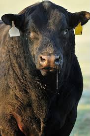

EKIPE
Rok Lačen Koprivna Black Angus

Team owner: Rok Lačen
Joined league: 2017 (season 1)
History: Team VOKA (seasons 1-4)
Voka Vaporizers (seasons 4-7)
Arena: Koprviski Hlev
Capacity: 35
Location: Koprivna, Črna na Koroškem
Average ranking: 8.00 (10th)
| Sezona | Uvrstitev |
|---|---|
| 2017/18 | 10 |
| 2018/19 | 4 |
| 2019/20 | 8 |
| 2020/21 | 10 |
| 2021/22 | 8 |
| 2022/23 | 8 |
| 2023/24 | 8 |
| 2024/25 | ... |
| AVERAGE | 8.00 |
Intervju - ROK LAČEN (september, 2022)
Prihranili smo najboljše za konec. Ne saj ne. Pač najbolj dolgo od vseh prav Voka ni začutil opraviti svoje državljanske dolžnosti – skrbeti za content. Zdaj se je vendarle odzval in poskrbel za nekaj odgovorov v svojem slogu.
1) Ali bo letos končno leto, ko kaj trejdate, ali pa bo ponovno že kar od drafta vaša ekipa popolna?
Letos smo si rekli, da bo leto popolnoma brez trejdov. To je zato, ker mi vsako leto katerikoli trejdi zajebejo sezono. Nismo popolni davč od tega. Bomo pa letos pokazali kdo bolš klobase na konco dela.
2) Šušlja se, da si želite prvi pick na draftu, da ste reeees 100%, da vam ostane Jordan Poole. Je na tem kaj resnice?
Drži. Poolu je z razlogom ime Jordan in menimo, da ni boljšega playerja v ligi, kar je dokazal tudi lani ko je bil daleč najboljši fantasy igralec v ligi.
3) Slovite kot ljubitelj rookijev. Koliko jih je na vašem radarju letos?
Rookiji so me od nekdaj zanimali saj so nekaka izpeljanka mojega imena. Vsak si zasluži priloznost če pokaze potencial zato tudi taka vsakoletna izbira le teh. Ponavadi kr doro izberemo, čene pa jih kaj hitro nadomestijo šlos free agenti pri kerih seveda ni za šparat pri bidanju.
Zaključna misel
Samooklicana najhujša nočna mora se torej kot kaže tudi letos namerava sezone lotiti na podoben način. Polno rookijev, visoke ponudbe na useless free agente in neodzivnost na trade requeste. V vsakem primeru mu želimo srečno roko na draft day in pad cen na pulled-pork, saj si brez tega zaključnega piknika ne znamo predstavljati.